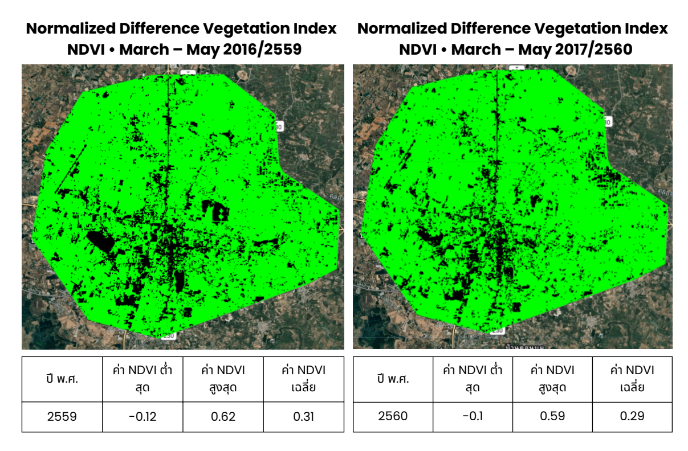
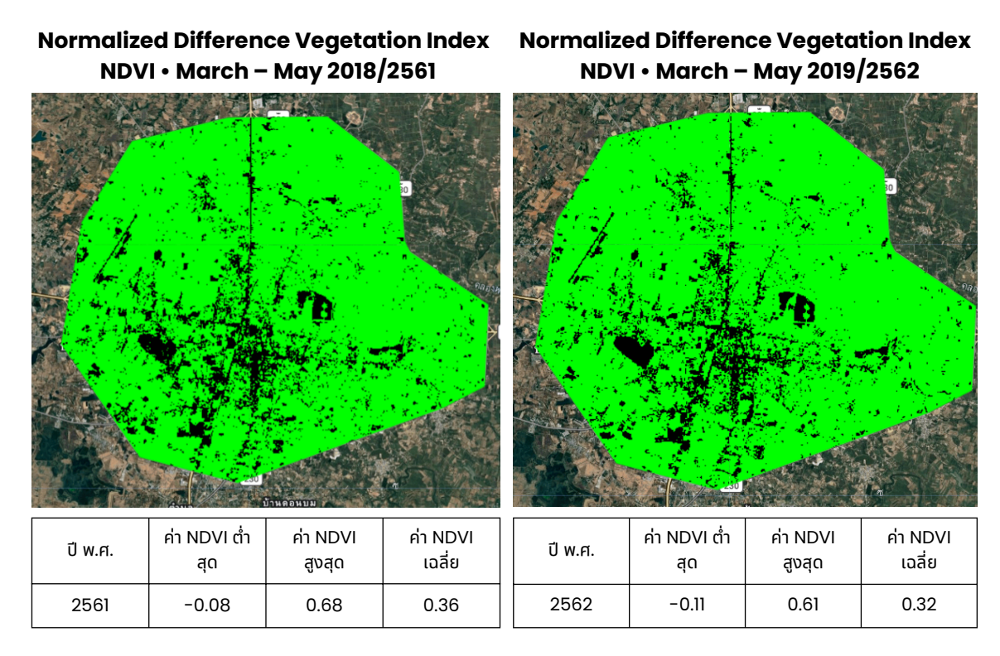
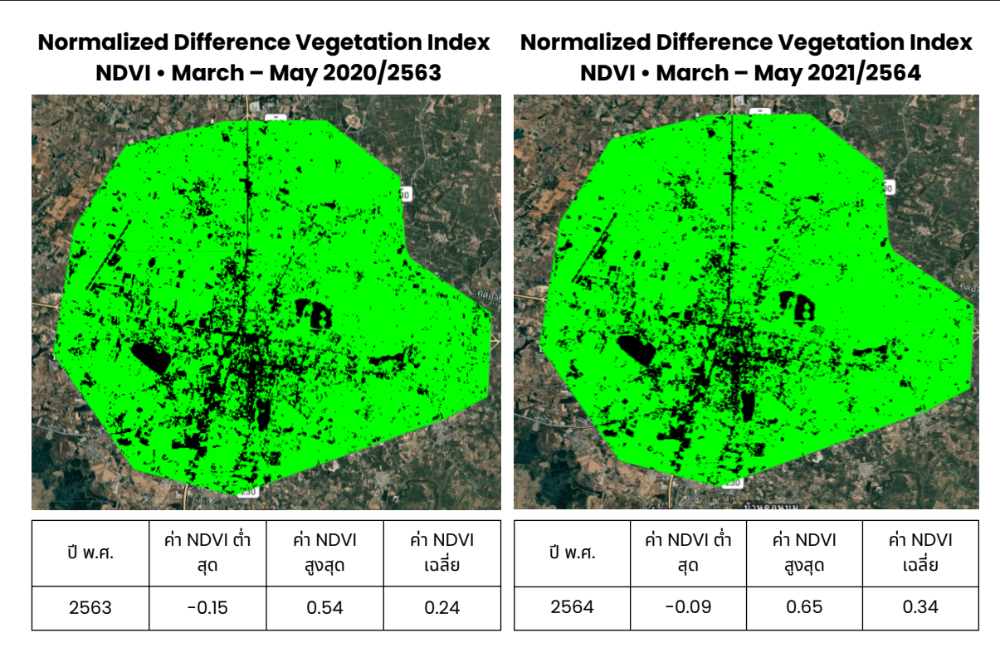
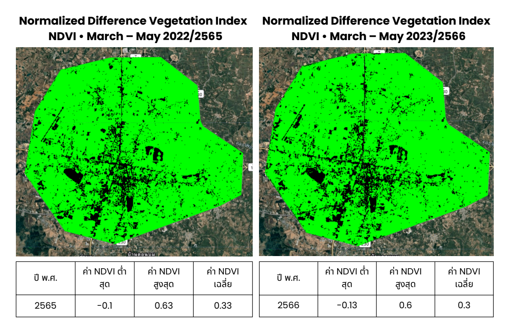
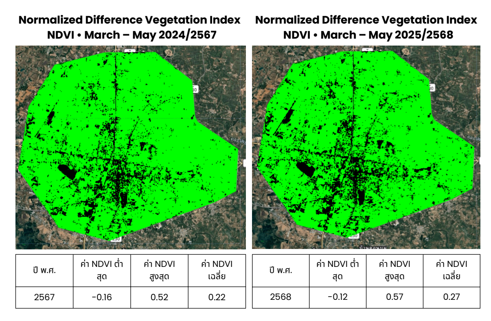
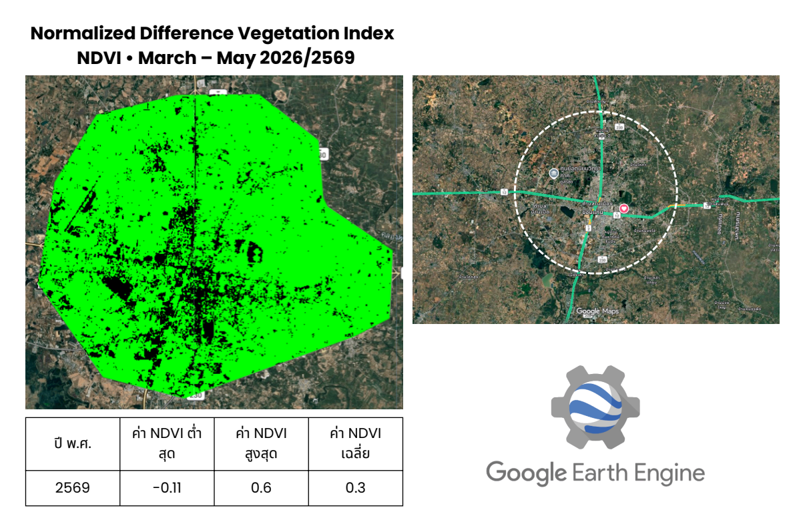
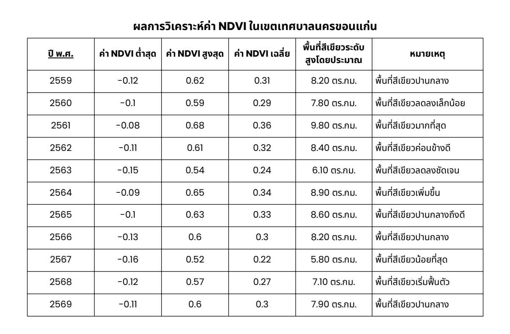

GeoHeat Khon Kaen · ดาวเทียม Landsat 8–9 ผ่าน Google Earth Engine
ดัชนีพืชพรรณ
NDVI
Normalized Difference Vegetation Index — วัดระดับความหนาแน่นของพืชพรรณและพื้นที่สีเขียวในเขตเมือง
จากข้อมูลดาวเทียมย้อนหลัง 10 ปี (พ.ศ. 2560–2569)
ดิน / สิ่งปลูกสร้าง
พืชพรรณหนาแน่น
สีน้ำตาล-เหลือง = NDVI ต่ำ (ดิน อาคาร น้ำ) · สีเขียวเข้ม = NDVI สูง (ป่า สวน พื้นที่เกษตร)
สีเขียวเข้ม = NDVI สูง
พื้นที่มีพืชพรรณหนาแน่น ป่า หรือสวน ช่วยลดอุณหภูมิและดูดซับ CO₂ ได้ดี
สีน้ำตาล = NDVI ต่ำ
พื้นที่โล่ง ดินเปล่า อาคาร หรือถนน ไม่มีพืชพรรณปกคลุม อุณหภูมิพื้นผิวสูงกว่า
ความสัมพันธ์กับ LST
NDVI สูงขึ้น → LST ต่ำลง พืชพรรณช่วยระบายความร้อนผ่านการคายน้ำ (Evapotranspiration)
วิธีวิเคราะห์
ประมวลผลผ่าน Google Earth Engine · ภาพ Landsat 8–9 ช่วงฤดูแล้ง (ม.ค.–พ.ค.) ทุกปี
แผนที่ NDVI รายปี พ.ศ. 2559–2569
แสดงการเปลี่ยนแปลงพื้นที่สีเขียวในเขตเทศบาลนครขอนแก่น 11 ปี (มี.ค.–พ.ค.) · วิเคราะห์ผ่าน Google Earth Engine / Landsat 8–9
พ.ศ. 2559–2560 (2016–2017)

🛰️
ยังไม่พบไฟล์รูปภาพ
assets/ndvi-1.png
พ.ศ. 2561–2562 (2018–2019)

🛰️
ยังไม่พบไฟล์รูปภาพ
assets/ndvi-2.png
พ.ศ. 2563–2564 (2020–2021)

🛰️
ยังไม่พบไฟล์รูปภาพ
assets/ndvi-3.png
พ.ศ. 2565–2566 (2022–2023)

🛰️
ยังไม่พบไฟล์รูปภาพ
assets/ndvi-4.png
พ.ศ. 2567–2568 (2024–2025)

🛰️
ยังไม่พบไฟล์รูปภาพ
assets/ndvi-5.png
พ.ศ. 2569 (2026)

🛰️
ยังไม่พบไฟล์รูปภาพ
assets/ndvi-6.png
ตารางสรุปผลการวิเคราะห์ NDVI พ.ศ. 2559–2569

🛰️
ยังไม่พบไฟล์รูปภาพ
assets/ndvi-7.png
สรุปการเปลี่ยนแปลง NDVI ขอนแก่น พ.ศ. 2559–2569
- พื้นที่สีเขียว (NDVI สูง) มีแนวโน้มลดลงอย่างต่อเนื่อง สอดคล้องกับการขยายตัวของเมืองที่เพิ่มขึ้น
- พ.ศ. 2567 (2024) ที่ LST สูงสุด 48.18°C มีความสัมพันธ์กับ NDVI เฉลี่ยต่ำสุดในรอบ 11 ปีที่ 0.22 พื้นที่สีเขียวเหลือเพียง 5.80 ตร.กม.
- NDVI มีความสัมพันธ์เชิงลบกับ LST — ยิ่งพืชพรรณน้อย อุณหภูมิพื้นผิวยิ่งสูง
- พื้นที่สีเขียวรอบนอกเมืองยังคงมี NDVI สูง แต่มีแนวโน้มถูกแปลงเป็นพื้นที่พัฒนา
- การเพิ่มต้นไม้ในเมืองและพื้นที่สีเขียวสาธารณะช่วยลด UHI ได้อย่างมีประสิทธิภาพ ดูข้อมูล NDBI ที่นี่